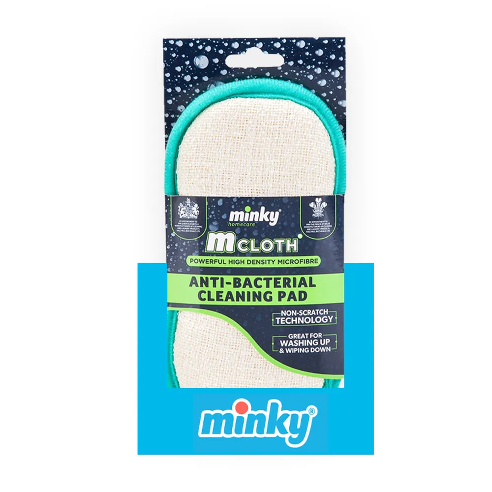

Silver technology
A cloth that doesn't harbour bacteria
Silver is woven through the microfibre and stops bacteria growing on the cloth. Because it's part of the fibre, the protection lasts beyond 50 washes.